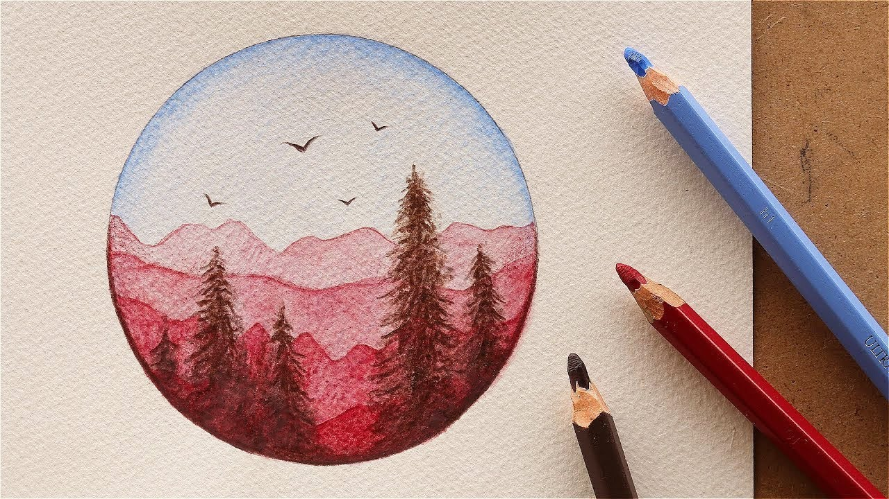

My Hobbies هواياتي
القراءة Reading

تُعد القراءة من أهم الأمور التي تحفظ العقل، فهي رياضة العقل التي تُحافظ على صحته وقوته، كما تُحافظ الرياضة البدنية على صحة الجسم ولياقته، وتُعد القراءة رياضة العقل الهامة، التي تحميه من أمراض الشيخوخة، وتُحفز من قدراته وتُقلل من ضعف الذاكرة، كما تُسهم القراءة في التخفيف من التوتر والضغط؛ لأنّها من الأنشطة المسلية التي يُمارسها الفرد بكل سعادة. تُعد إحدى وسائل الترفيه المفيدة للغاية، وتُساعد القارئ في التخلص من ضغوطات الحياة ومشكلاتها، والاندماج في عالم من الخيال والمتعة والفائدة، وهو عالم الكتب الذي يمتلئ بالكتب والقصص والروايات الحقيقية والخيالية، والتي تُسهم في منح العقل الراحة والهدوء والسكينة
الرسم Painting
يساعد الرسم على تقوية حس الإبداع والخيال عند الإنسان، كما تلعب المهارات الفنية دورًا هاماً في التطور الكلي للدماغ. - يساعد الرسم على تخفيف الشعور بالإجهاد وتحسين الحالة المزاجية للإنسان. ... - يساعد الرسمعلى التعبير عن المشاعر، مما يساعد فى التغلب على الخجل وزيادة الثقة بالنفس.